George Hripcsak, MD, MS
Columbia University Medical Center
Wifi: hhonors
Passcode: OHDSI16

Thank you for your support!
Patient-Centered Outcomes Research Institute
(PCORI)
Eugene Washington Engagement Award
Thank you for your sponsorship!
Thank you exhibitors!
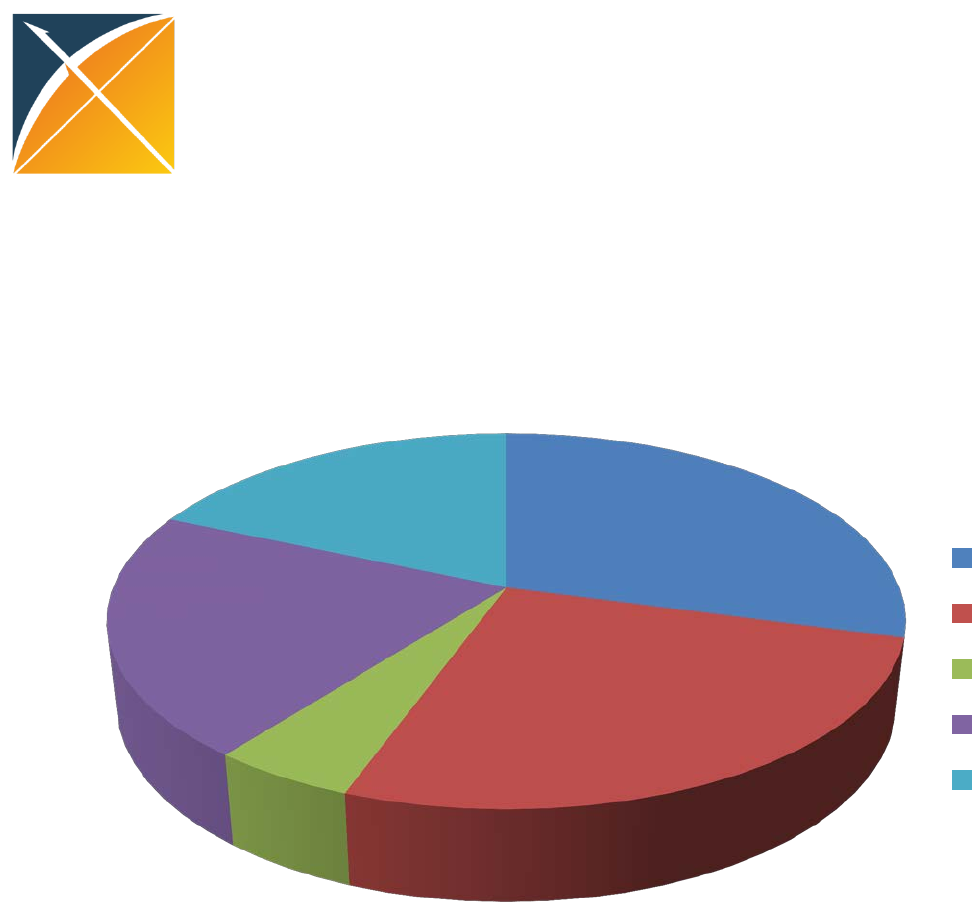
OHDSI Symposium 2016
Breakdown of participants
•11 countries, 27 US states
academic
govt
health system and payer
pharma
technology

Agenda
8:30 Welcome to the journey: OHDSI 2016
–George Hripcsak
9:00 OHDSI’s journey toward reliable evidence generation and dissemination
–The journey toward Clinical Characterization, Patrick Ryan
9:45 (Break)
–The journey toward Patient-Level Prediction, Peter Rijnbeek
–The journey toward Population-level Effect Estimation, Martijn Schuemie
12:15 (Lunch)
12:45 OHDSI Collaborator Showcase: Sharing the journey across the community
–Observational data management, Analytics technology and infrastructure, Methodological
research, Clinical applications in clinical characterization, population-level effect estimation,
and patient-level prediction
2:45 Community Panel: Where are we on the journey right now? How did we get here?
–Kristin Feeney (moderator)
–Stephanie Reisinger, Michael Matheny, Rae Woong Park, Christian Reich, Adler Perotte
3:45 (Break)
4:00 Reaction Panel: What’s our journey’s destination? How do we get there?
–Jon Duke (moderator)
–Jianying Hu, Kristijan Kahler, Charles Bailey, Nigam Shah, Danica Marinac-Dabic
5:00 Oh, the places we’ll go!
–Patrick Ryan

OHDSI’s Mission
To improve health, by empowering a community
to collaboratively generate the evidence that
promotes better health decisions and better
care.

Vision
A world in which observational research
produces a comprehensive understanding of
health and disease.

Objectives
•Innovation: Observational research is a field which will benefit
greatly from disruptive thinking. We actively seek and encourage
fresh methodological approaches in our work.
•Reproducibility: Accurate, reproducible, and well-calibrated
evidence is necessary for health improvement.
•Community: Everyone is welcome to actively participate in OHDSI,
whether you are a patient, a health professional, a researcher, or
someone who simply believes in our cause.
•Collaboration: We work collectively to prioritize and address the
real world needs of our community’s participants.
•Openness: We strive to make all our community’s proceeds open
and publicly accessible, including the methods, tools and the
evidence that we generate.
•Beneficence: We seek to protect the rights of individuals and
organizations within our community at all times.
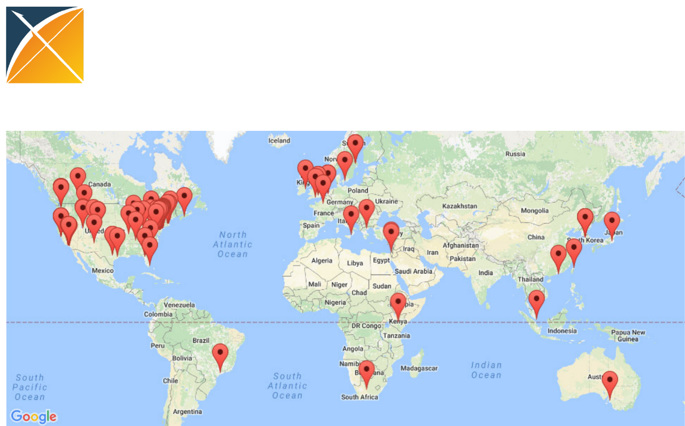
Collaborators

Evidence OHDSI seeks to generate
from observational data
•Clinical characterization
–Natural history: Who has diabetes, and who takes metformin?
–Quality improvement: What proportion of patients with
diabetes experience complications?
•Population-level estimation
–Safety surveillance: Does metformin cause lactic acidosis?
–Comparative effectiveness: Does metformin cause lactic
acidosis more than glyburide?
•Patient-level prediction
–Precision medicine: Given everything you know about me, if I
take metformin, what is the chance I will get lactic acidosis?
–Disease interception: Given everything you know about me,
what is the chance I will develop diabetes?

Characterization
•Today we carry out RCTs without clear knowledge of
actual practice
•There will be no RCTs without an observational
precursor
–It will be required to characterize a population using large-
scale observational data before designing an RCT
–Disease burden
–Actual treatment practice
–Time on therapy
–Course and complication rate
–Done now somewhat through literature and pilot studies
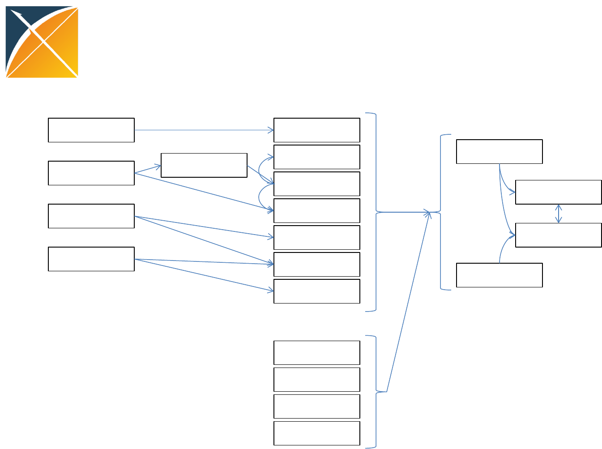
Treatment Pathways
Public
Industry
Regulator
Academics RC T, Obs
Literature
Lay press
Social media
Guidelines
Formulary
Labels
Advertising Clinician
Patient
Family
Consultant
Indication
Feasibility
Cost
Preference
Local stakeholders
Global stakeholders Conduits
Inputs
Evidence
OHDSI in action:
Chronic disease treatment pathways
•Conceived at AMIA
•Protocol written, code
written and tested at 2
sites
•Analysis submitted to
OHDSI network
•Results submitted for 7
databases
15Nov2014
30Nov2014
2Dec2014
5Dec2014
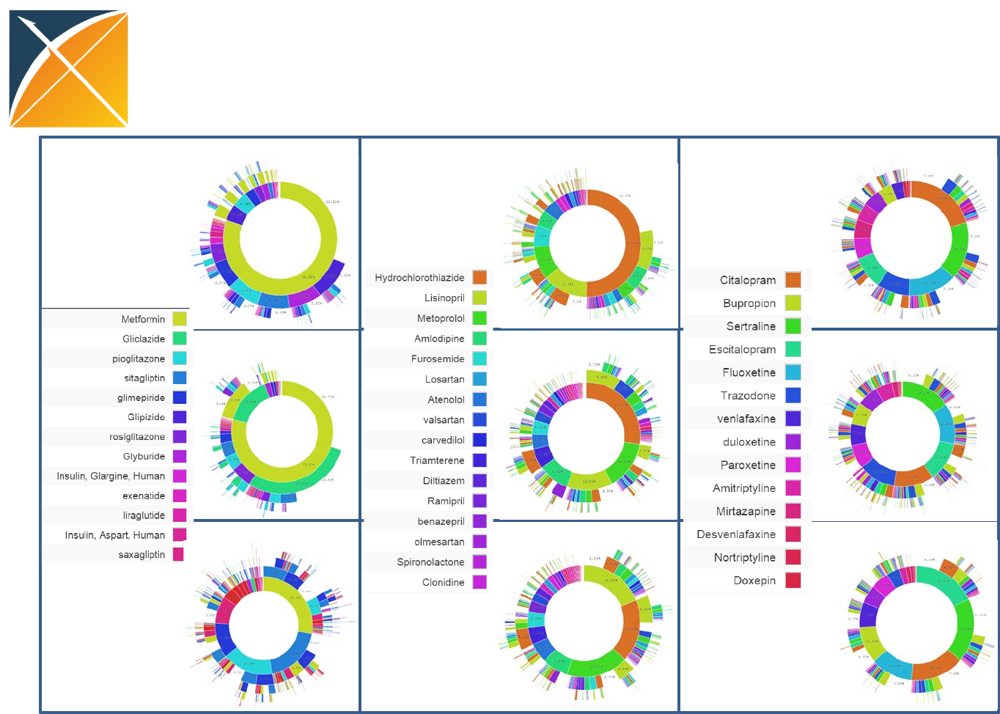
Type 2 Diabetes Mellitus Hypertension Depression
OPTUM
GE
MDCD
CUMC
INPC
MDCR
CPRD
JMDC
CCAE
Population-level heterogeneity
Proceeding of the National Academy of Sciences (PNAS), 2016

Network research
•It is feasible to encode the world population in
a single data model
–Over 600,000,000 records by voluntary effort
•Generating evidence is feasible
•Stakeholders willing to share results
•Able to accommodate vast differences in
privacy and research regulation

Pediatric oncology
•1950
–Doctors with excellent training, vast experience,
and strong motivation tailor treatment to each
child, practicing medicine as an art
–10% childhood cancer cure rate
•2010
–60 years of scientific approach to treatment with
clinical trials
–80% childhood cancer cure rate
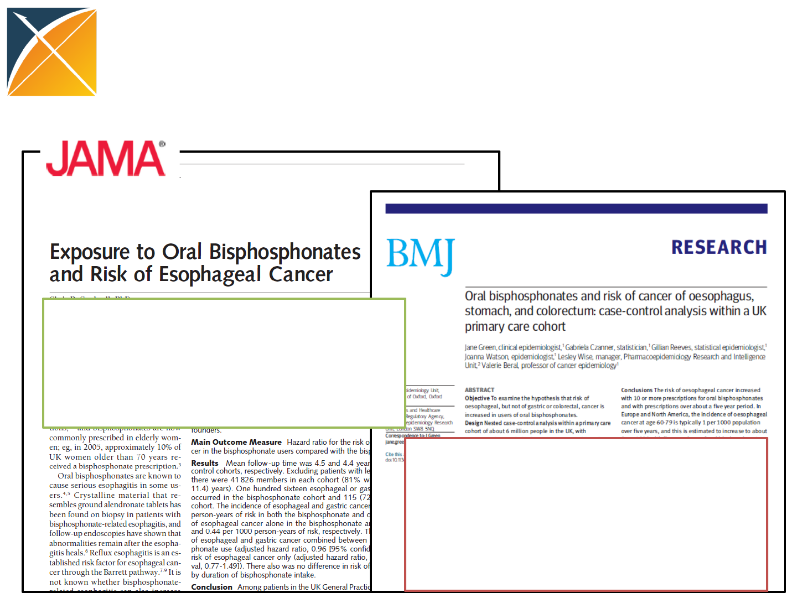
What is the quality of the current
evidence from observational analyses?
18
August2010: “Among patients in the UK
General Practice Research Database, the
use of oral bisphosphonates was not
significantly associated with incident
esophageal or gastric cancer”
Sept2010: “In this large nested case-
control study within a UK cohort [General
Practice Research Database], we found a
significantly increased risk of oesophageal
cancer in people with previous
prescriptions for oral bisphosphonates”
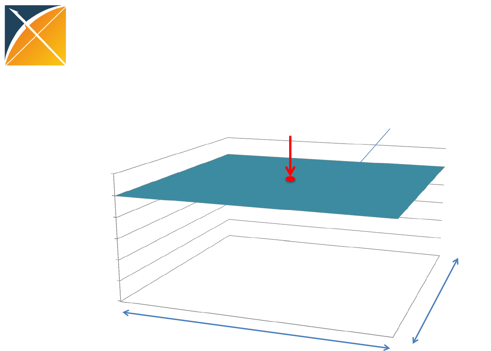
0.4
0.6
0.8
1
1.2
1.4
1.6
Distribution of possible results
for one hypothesis
Stat signif > 1
Databases
Methods
OR
Study
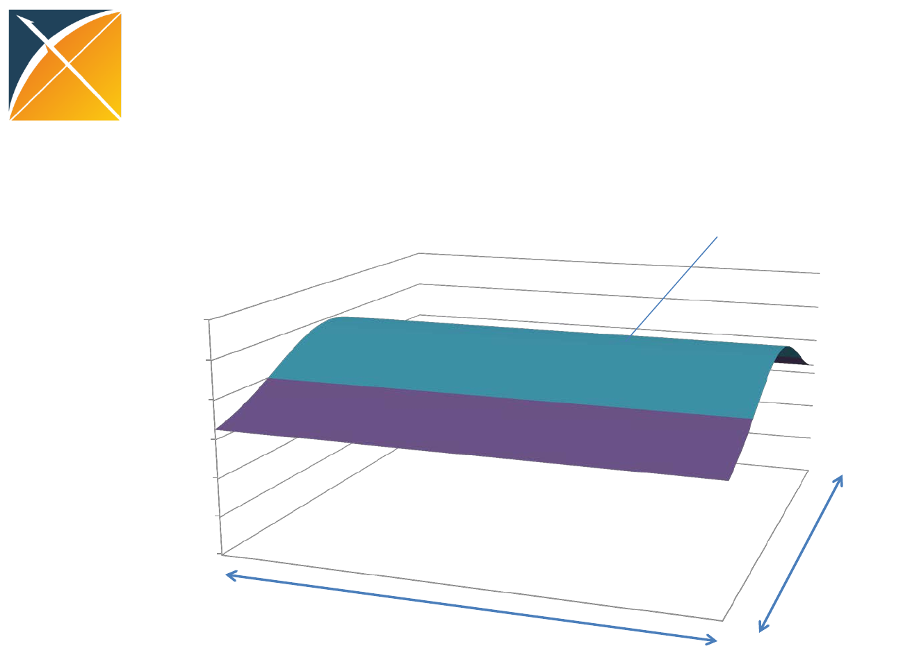
0.4
0.6
0.8
1
1.2
1.4
1.6
Distribution of possible results
for one hypothesis
Stat signif > 1
Databases
Methods
OR
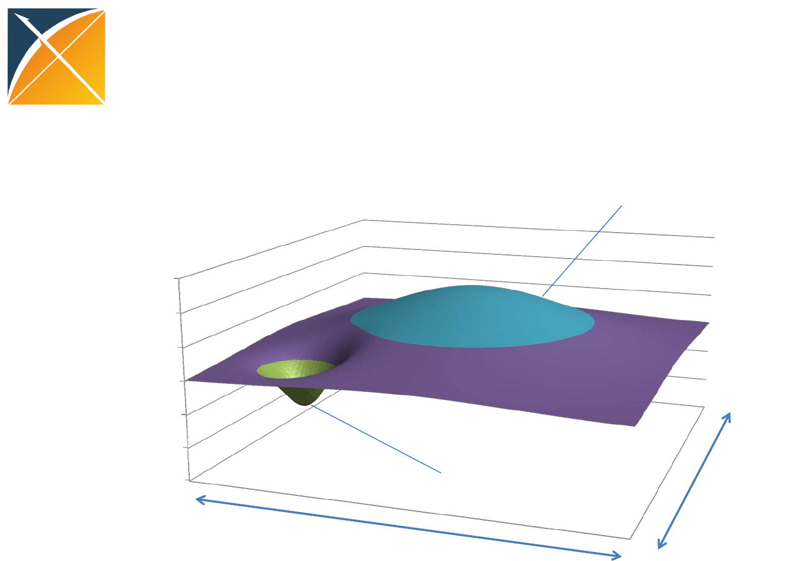
Distribution of possible results
for one hypothesis
0.4
0.6
0.8
1
1.2
1.4
1.6
OR
Stat signif > 1
Stat signif < 1 Databases
Methods
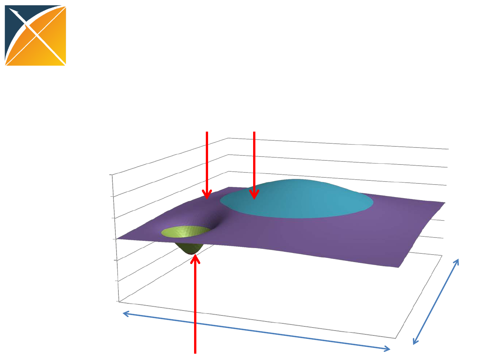
Databases
Methods
Distribution of possible results
for one hypothesis
0.4
0.6
0.8
1
1.2
1.4
1.6
OR
BMJ
Study #3
JAMA
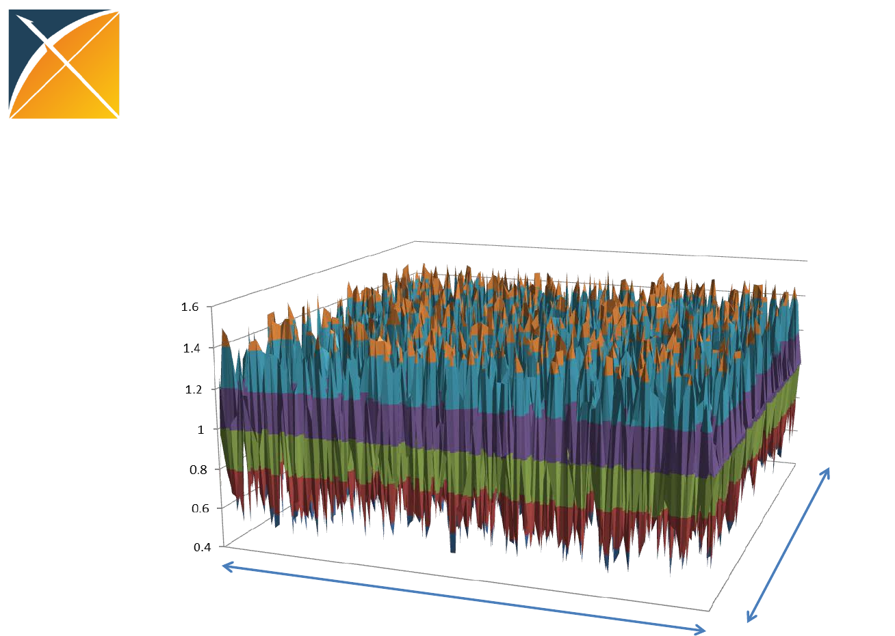
Distribution of possible results
for one hypothesis
OR
Databases
Methods
Take a scientific approach to science
Madigan D, Ryan PB, Schuemie MJ et al, American Journal of Epidemiology, 2013
“Evaluating the Impact of Database Heterogeneity on Observational Study Results”
Madigan D, Ryan PB, Schuemie MJ, Therapeutic Advances in Drug Safety, 2013: “Does design matter?
Systematic evaluation of the impact of analytical choices on effect estimates in observational studies”
Ryan PB, Stang PE, Overhage JM et al, Drug Safety, 2013:
“A Comparison of the Empirical Performance of Methods for a Risk Identification System”
Schuemie MJ, Ryan PB, DuMouchel W, et al, Statistics in Medicine, 2013:
“Interpreting observational studies: why empirical calibration is needed to correct p-values”
1. Database heterogeneity:
Holding analysis constant, different data may yield different estimates
2. Parameter sensitivity:
Holding data constant, different analytic design choices may yield different
estimates
3. Empirical performance:
Most observational methods do not have nominal statistical operating
characteristics
4. Empirical calibration can help restore interpretation of study findings
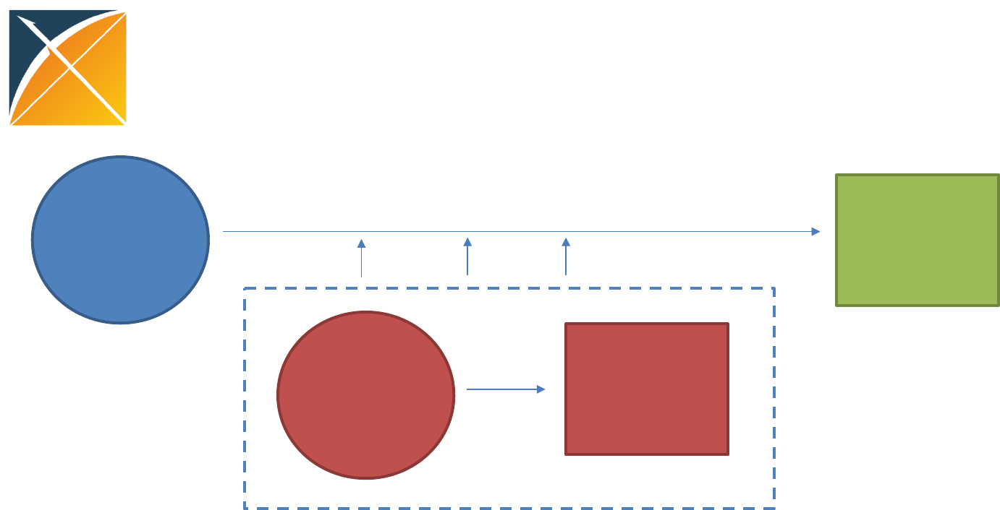
OHDSI’s approach to open science
Open
source
software
Open
science
Enable users
Generate
evidence
•Open science is about sharing the journey to evidence generation
•Open-source software can be part of the journey, but it’s not a final destination
•Open processes can enhance the journey through improved reproducibility of
research and expanded adoption of scientific best practices
Data + Analytics + Domain expertise
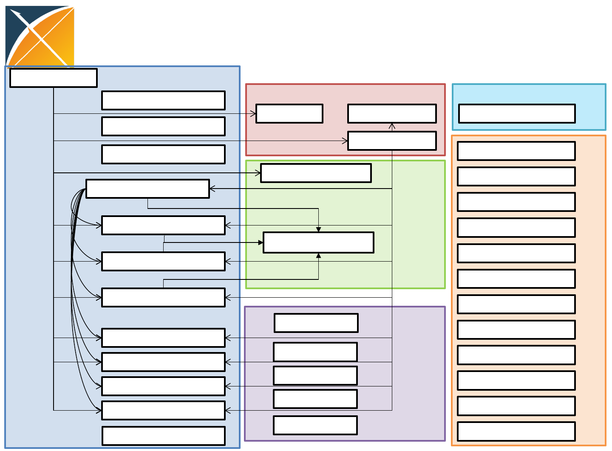
Deep information model
OMOP CDM v5.0.1
Concept
Concept_relationship
Concept_ancestor
Vocabulary
Source_to_concept_map
Relationship
Concept_synonym
Drug_strength
Cohort_definition
Standardized vocabularies
Attribute_definition
Domain
Concept_class
Cohort
Dose_era
Condition_era
Drug_era
Cohort_attribute
Standardized derived
elements
Standardized clinical data
Drug_exposure
Condition_occurrence
Procedure_occurrence
Visit_occurrence
Measurement
Observation_period
Payer_plan_period
Provider
Care_site Location
Death
Cost
Device_exposure
Observation
Note
Standardized health system data
Fact_relationship
Specimen
CDM_source
Standardized meta-data
Standardized health
economics
Person
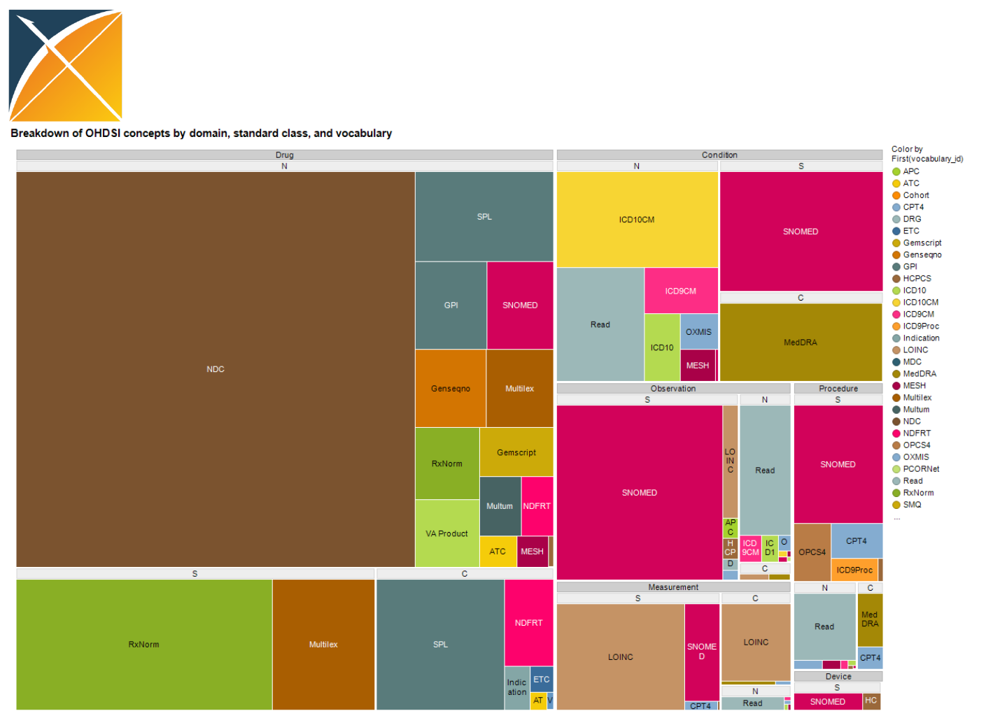
Extensive vocabularies
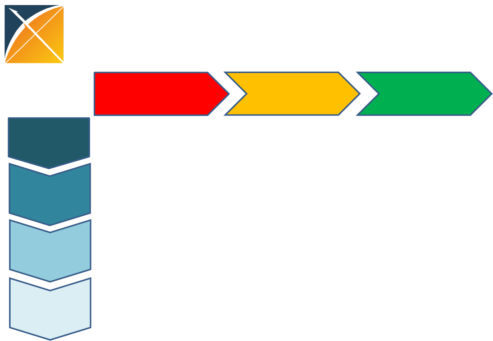
Methodological research
Open-source
analytics
development
Clinical applications
Observational
data management
Population-level
estimation
Patient-level
prediction
Clinical
characterization
OHDSI ongoing collaborative activities
Open science
•Admit that there is a problem
•Study it scientifically
–Define that surface and differentiate true variation
from confounding …
•Total description of every study
•Research into new methods

Thanks!

{kind=link}